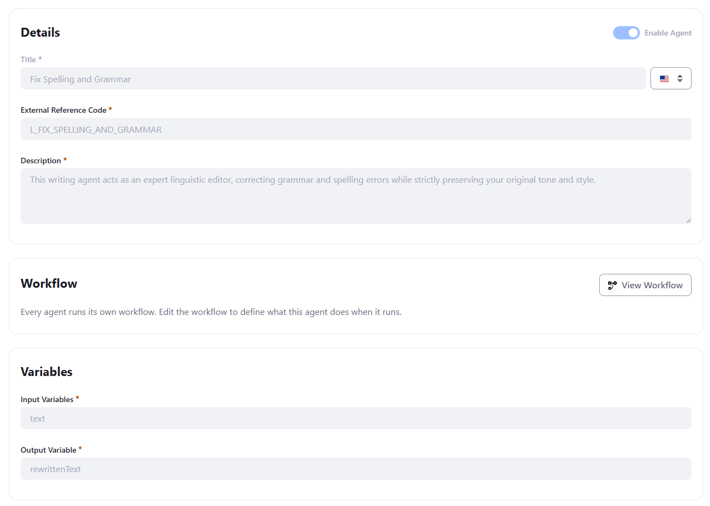
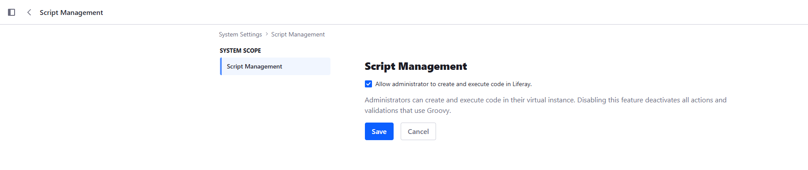
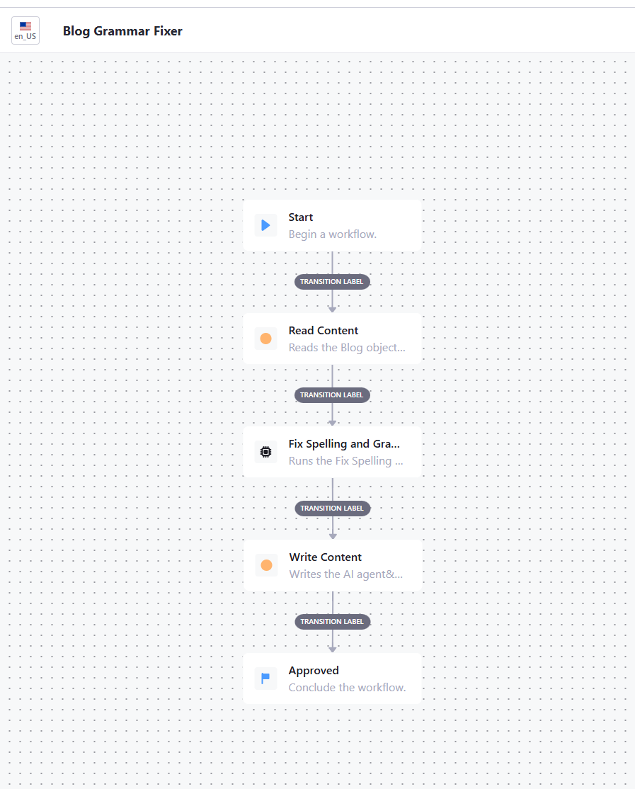
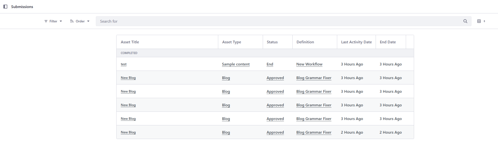

Quick Start: Fixing Blog Grammar with an AI Hub Agent Triggered from a DXP Workflow
This quick start covers the AI Hub Agent node in Liferay's classic Kaleo workflow engine: a workflow definition running inside DXP itself (the same engine behind content approval processes) can synchronously invoke an AI Hub agent as one of its steps, pass it data, and use what it returns.
The worked example is deliberately narrow: a Kaleo workflow attached to a
Blog object reads the blog's Content field, sends it to AI Hub's
built-in Fix Spelling and Grammar agent, and writes the corrected text
back — fully automated, no human approval step.
This quick start assumes you have already completed AI Hub Quick Start 1 — HTTP Requests and AI Hub Quick Start 2 — RAG: AI Hub enabled and connected to DXP, and an Internet-accessible HTTPS URL for your DXP environment.
1. Building blocks
The <ai-hub-agent> Kaleo node
Liferay's core Kaleo workflow engine ships a node type dedicated to this:
NodeType.AI_HUB_AGENT, implemented by
com.liferay.portal.workflow.kaleo.runtime.internal.node.AIHubAgentNodeExecutor.
It sits in a workflow definition next to the familiar state/task/condition
nodes, and is gated by the same feature flag as the rest of AI Hub
(LPD-62272).
When the workflow engine enters this node, it:
-
Obtains an authorization token for the AI Hub Cell connection configured on this DXP instance (the same connection you set up in Quick Start 1).
-
Builds a JSON payload from every
Boolean/Number/Stringentry currently in the Kaleo workflow's context — this becomes thecontextthe agent receives. -
POSTs it, synchronously, to AI Hub's
agent-instancesendpoint and waits for the response. -
Merges every key of the JSON response back into the workflow context, then transitions to the node's single outgoing transition.
The node's own settings, configured directly in the workflow definition XML, are:
| Setting | Purpose |
|---|---|
agent-definition-external-reference-code |
Which AI Hub agent to invoke |
timeout |
How long to wait for the agent's response, in milliseconds |
⚠️ Set a realistic
timeout. The default fallback if you omit the setting is 120000 (120s), which is reasonable — but if you set an explicit value, don't set it too low. A short-lived agent's own internal workflow (its LLM node, and any RAG or HTTP Request node it calls first) can easily take several seconds.1000(1 second) will fail almost every real invocation with aSocketTimeoutException, with no useful error beyond "Read timed out".60000is a safe starting point.
How data moves between the two workflows
The Kaleo workflowContext — the same Map<String, Serializable> a Kaleo
workflow already carries from node to node — is the entire communication
channel between the DXP workflow and the AI Hub agent's own, separate
workflow. There is no other wiring: no dedicated input/output mapping UI on
the ai-hub-agent node itself, nothing to configure beyond the agent's ERC
and the timeout.
-
DXP → AI Hub: every
Boolean,Number, orStringcurrently sitting inworkflowContextwhen the node fires gets sent as the agent'scontextpayload. Inside the agent's own workflow, each of those becomes an ordinary input variable, referenced the normal way ({{variableName}}in a prompt or a node's URL/body) — the agent has no way to tell that the value came from a Kaleo workflow rather than a chat message or a manual test. -
AI Hub → DXP: the agent's result is merged back into that same
workflowContextbefore the workflow continues to its next node, as theoutputvariable — today, an agent invoked this way returns exactly one output value, always under that literal key, regardless of how its Output Variable is actually named in Agent Builder. If an agent's workflow produces more than one piece of data you need, you currently have to combine it into that single returned value yourself (for example, as one JSON string) and parse it apart on the DXP side.
This is why, in this quick start's read-content action, setting
workflowContext.put("text", ...) is enough for the agent's text input
variable to be populated — no separate step declares that mapping anywhere.
Groovy actions vs. a workflowAction client extension
The read-content and write-content steps in this quick start are Groovy
<action> scripts, running in-process inside DXP. That isn't the only way
to script a Kaleo workflow step — Liferay also supports a workflowAction
client extension: an external microservice (a Spring Boot app, for
example) that DXP calls out to over HTTP for that step, authenticated with a
token delegated to a specific user rather than running under the enclosing
request's own identity.
A client extension is the more production-shaped option — real code in a proper IDE with its own tests, deployed and versioned independently of the workflow definition — and, because of that per-user delegated token, it avoids some of the identity limitations described in Section 3. It also means more setup: a separate deployable artifact, its own OAuth2 application, and routes wiring it to the workflow definition.
For a quick start, a Groovy action is the fastest path to something working
end to end: paste the script directly into the action in the Designer, no
separate deployment, no additional OAuth2 configuration. That's the
approach used throughout this guide; reach for a workflowAction client
extension once similar logic is heading toward production.
The built-in "Fix Spelling and Grammar" agent
AI Hub ships a ready-to-use agent for this exact scenario
(external reference code L_FIX_SPELLING_AND_GRAMMAR). Its contract, visible
in AI Hub → Agent Builder:

| Field | Value |
|---|---|
| Input Variables | text |
| Output Variable | rewrittenText (as named in Agent Builder — see below) |
⚠️ Don't trust the Output Variable's name for what key to read. Per the note above, whatever this agent's Output Variable is actually named in Agent Builder, the value still arrives in
workflowContextunder the fixed keyoutput. Reading the field's configured name instead (a very reasonable first guess) silently returnsnull— no error, the workflow completes normally, and nothing gets updated. Always confirm by logging the whole workflow context after the node runs (see Step 5) rather than assume.
2. Step-by-step tutorial
Step 1 — Prerequisites
- AI Hub enabled and connected to DXP (Quick Start 1, Steps 2–4).
- The Fix Spelling and Grammar agent enabled in AI Hub → Agent Builder.
-
A DXP object (native content type or a custom Object) with a text field to correct. This quick start uses a custom Blog object with a
Contentfield (Rich Text, field namecontent, marked Localizable). -
Groovy scripting enabled: Control Panel → Configuration → System Settings → Script Management, check "Allow administrator to create and execute code in Liferay." This is what lets the
read-contentandwrite-contentactions' Groovy scripts run at all — with it off, every action and validation that uses Groovy is silently deactivated.

- If your DXP environment sits behind a tunnel such as ngrok (see Quick Start 1's Prerequisites), make sure it's configured to let Liferay resolve its own public URL correctly — see the note below. Several of the node's internal HTTP calls (including a call DXP makes to itself to mint a token) depend on this being right.
portal-ext.properties — trusting the reverse proxy
The AIHubAgentNodeExecutor node needs DXP to know its own correct public
URL, including when it calls itself (/o/ai-hub-cell/v1.0/authorization-tokens)
to obtain that token. Behind a tunnel like ngrok, this means telling Liferay
to trust the tunnel's forwarded headers instead of guessing from its own
local Tomcat port — otherwise the port DXP is actually listening on
(commonly 8080) leaks into URLs that are supposed to be the tunnel's
public, portless HTTPS address, and outbound self-calls fail or hang.
Add to portal-ext.properties:
web.server.http.port=80
web.server.https.port=443
web.server.forwarded.protocol.enabled=true
web.server.forwarded.host.enabled=true
web.server.forwarded.port.enabled=true
Two things worth calling out explicitly:
-
web.server.https.port=443(not-1) matters on its own, separately from theforwarded.*properties: some of the node's internal URL resolution happens on a background thread with no active HTTP request to read a forwarded-port header from in the first place (see the box below) — in that situation only a static port value is used at all. Setting it explicitly to the real HTTPS port (443) means no port suffix ever gets appended to the resolved URL, matching what a barehttps://tunnel address actually needs. -
Don't combine
web.server.forwarded.host.enabled=truewith a manually-setweb.server.host, orforwarded.protocol.enabled=truewith a manually-setweb.server.protocol. Liferay's own documentation for these properties is explicit that the static property must be left at its default when the correspondingforwarded.*.enabledflag is on — setting both leads to inconsistent, hard-to-diagnose URL resolution.
⚠️ Why the port matters even though the call never leaves the machine.
AIHubAgentNodeExecutorruns on a background executor thread, detached from any incoming HTTP request — there is no live request whoseX-Forwarded-Portheader it could read, even withforwarded.port.enabledon. Without a staticweb.server.https.port, URL resolution falls back to the JVM's actual listening port (e.g.8080), which then gets appended to what should be a barehttps://your-tunnel-hostaddress, and the resulting call fails. A generous nodetimeout(see above) won't fix this — no amount of waiting produces a valid response for a malformed URL. Restart Tomcat after changingportal-ext.properties; it's only read at startup.
Step 2 — Create the workflow definition
In Control Panel → Workflow → Workflow Designer, create a new workflow with this shape:
Start
|
v
Read Content (state, Groovy action onEntry)
|
v
Fix Spelling and Grammar (ai-hub-agent)
|
v
Write Content (state, Groovy action onEntry)
|
v
Approved (terminal)
Full definition XML:
<?xml version="1.0"?>
<workflow-definition
xmlns="urn:liferay.com:liferay-workflow_7.4.0"
xmlns:xsi="http://www.w3.org/2001/XMLSchema-instance"
xsi:schemaLocation="urn:liferay.com:liferay-workflow_7.4.0 http://www.liferay.com/dtd/liferay-workflow-definition_7_4_0.xsd"
>
<name>Blog Grammar Fixer</name>
<state>
<name>created</name>
<metadata>
<![CDATA[
{
"xy": [
300,
60
]
}
]]>
</metadata>
<initial>true</initial>
<labels>
<label language-id="en_US">Start</label>
</labels>
<transitions>
<transition>
<labels>
<label language-id="en_US">Transition Label</label>
</labels>
<name>read-content</name>
<target>read-content</target>
<default>true</default>
</transition>
</transitions>
</state>
<state>
<name>read-content</name>
<description>Reads the Blog object entry's content field into the workflow context.</description>
<metadata>
<![CDATA[
{
"xy": [
300,
220
]
}
]]>
</metadata>
<actions>
<action>
<name>Read Blog content</name>
<script>
<![CDATA[
import com.liferay.object.service.ObjectEntryLocalServiceUtil
import com.liferay.portal.kernel.util.GetterUtil
long objectEntryId = GetterUtil.getLong(workflowContext.get("entryClassPK"))
def objectEntry = ObjectEntryLocalServiceUtil.getObjectEntry(objectEntryId)
def contentI18n = (Map) objectEntry.getValues().get("content_i18n")
workflowContext.put("text", (String) contentI18n?.get("en_US"))
]]>
</script>
<script-language>groovy</script-language>
<priority>1</priority>
<execution-type>onEntry</execution-type>
</action>
</actions>
<labels>
<label language-id="en_US">Read Content</label>
</labels>
<transitions>
<transition>
<labels>
<label language-id="en_US">Transition Label</label>
</labels>
<name>review</name>
<target>review</target>
<default>true</default>
</transition>
</transitions>
</state>
<ai-hub-agent>
<name>review</name>
<description>Runs the Fix Spelling and Grammar AI Hub agent.</description>
<metadata>
<![CDATA[
{
"xy": [
300,
380
]
}
]]>
</metadata>
<labels>
<label language-id="en_US">Fix Spelling and Grammar</label>
</labels>
<agent-definition-external-reference-code>L_FIX_SPELLING_AND_GRAMMAR</agent-definition-external-reference-code>
<timeout>60000</timeout>
<transitions>
<transition>
<labels>
<label language-id="en_US">Transition Label</label>
</labels>
<name>write-content</name>
<target>write-content</target>
<default>true</default>
</transition>
</transitions>
</ai-hub-agent>
<state>
<name>write-content</name>
<description>Writes the AI agent's corrected text back onto the Blog object entry.</description>
<metadata>
<![CDATA[
{
"xy": [
300,
540
]
}
]]>
</metadata>
<actions>
<action>
<name>Write Blog content</name>
<script>
<![CDATA[
import com.liferay.object.service.ObjectEntryLocalServiceUtil
import com.liferay.portal.kernel.service.ServiceContext
import com.liferay.portal.kernel.util.GetterUtil
import com.liferay.portal.kernel.util.Validator
long objectEntryId = GetterUtil.getLong(workflowContext.get("entryClassPK"))
def objectEntry = ObjectEntryLocalServiceUtil.getObjectEntry(objectEntryId)
String rewrittenText = (String) workflowContext.get("output")
if (Validator.isNotNull(rewrittenText)) {
def values = new HashMap<>(objectEntry.getValues())
values.put("content_i18n", ["en_US": rewrittenText])
ObjectEntryLocalServiceUtil.updateObjectEntry(
kaleoInstanceToken.getUserId(),
objectEntryId,
objectEntry.getObjectEntryFolderId(),
values,
new ServiceContext())
}
]]>
</script>
<script-language>groovy</script-language>
<priority>1</priority>
<execution-type>onEntry</execution-type>
</action>
</actions>
<labels>
<label language-id="en_US">Write Content</label>
</labels>
<transitions>
<transition>
<labels>
<label language-id="en_US">Transition Label</label>
</labels>
<name>approve</name>
<target>approved</target>
<default>true</default>
</transition>
</transitions>
</state>
<state>
<name>approved</name>
<metadata>
<![CDATA[
{
"terminal": true,
"xy": [
300,
700
]
}
]]>
</metadata>
<labels>
<label language-id="en_US">Approved</label>
</labels>
<actions>
<action>
<name>approve</name>
<status>0</status>
<execution-type>onEntry</execution-type>
</action>
</actions>
</state>
</workflow-definition>

⚠️ The Workflow Designer's own parser is stricter than the Kaleo XSD. A hand-simplified XML that omits
<metadata>(thexycanvas position) on a node, or<labels>on a transition, deploys and runs fine through the API — but re-opening or re-saving it through the Designer UI can throw a client-side JavaScript error (Cannot read properties of undefined (reading '0'), from the canvas trying to readxy[0]on a missingmetadatablock) and refuse to save. Always keep<metadata>and transition<labels>on every node, even ones you write by hand.⚠️ Remove the
<version>tag before pasting a workflow definition into the Designer. Every version of a workflow definition already deployed on your instance has its own<version>number, assigned by DXP — pasting in XML that includes one (the XML above included, and any XML you export from an existing definition through the Designer) can conflict with what's already there instead of being treated as a new revision. Strip the<version>...</version>line before pasting either a fresh definition or an update to an existing one; DXP assigns the next version number itself on save.
Step 3 — Reading a localized field
ObjectEntryLocalServiceUtil.getObjectEntry(objectEntryId).getValues()
returns a Map<String, Serializable> that, for a localized field
(Content here — Localizable is checked on its Content Structure field
definition), actually contains two related entries: a flattened content
key, and the raw per-language map under content_i18n
(<fieldName>_i18n — the same key Step 5 writes to).
The flattened content key is convenient, but it resolves to the object
entry's own default language (objectEntry.getDefaultLanguageId()) —
not necessarily en_US, and not necessarily the locale you actually want.
To read a specific locale reliably, go through the _i18n map directly,
the same way Step 5 writes to it:
def contentI18n = (Map) objectEntry.getValues().get("content_i18n")
workflowContext.put("text", (String) contentI18n?.get("en_US"))
entryClassPK — the object entry's ID — is one of several standard keys
Kaleo automatically populates in the workflow context when the workflow is
attached to an object; no extra wiring needed to get it.
Step 4 — The AI Hub Agent node
Configure the ai-hub-agent node's settings (agent-definition-external-reference-code
and timeout — see Step 2's XML) exactly as documented in Building blocks
above. Nothing else is required on this node — no assignment, no additional
input mapping. The agent reads text from the context automatically, and
writes output back into it.
Step 5 — Writing a localized field back
This is the step that doesn't work the same way as reading. Writing a
localized field's value requires two things getValues()'s convenient flat
view hides from you:
-
The key isn't the field's own name (
content) — it's<fieldName>_i18n(content_i18nhere). This is a fixed, mechanical naming rule (ObjectField.getI18nObjectFieldName()returnsgetName() + "_i18n"), not something configured per field. -
The value under that key must be a
Map<String, String>keyed by language ID ("en_US", not aLocaleobject), not a plainString.
def values = new HashMap<>(objectEntry.getValues())
values.put("content_i18n", ["en_US": rewrittenText])
ObjectEntryLocalServiceUtil.updateObjectEntry(
kaleoInstanceToken.getUserId(),
objectEntryId,
objectEntry.getObjectEntryFolderId(),
values,
new ServiceContext())
Passing values.put("content", rewrittenText) instead — the natural thing
to try, matching what worked for reading — compiles, runs, and returns no
error at all: the write silently updates nothing, because
ObjectEntryLocalServiceImpl explicitly strips the bare field name (and the
_i18n key, if present) from what it writes to the entry's main table for
any field it knows is localized, and only consults the _i18n map for the
dedicated localization table.
✅ How to verify this instead of guessing. Log the entire
workflowContextright after theai-hub-agentnode, before assuming what key or shape a value has:import com.liferay.portal.kernel.log.Log import com.liferay.portal.kernel.log.LogFactoryUtil Log _log = LogFactoryUtil.getLog("BlogGrammarFixer") _log.error("BlogGrammarFixer workflowContext: " + workflowContext)
_log.error(...)is used deliberately here (not.info()) so the line is visible without first configuring Server Administration → Log Levels — remove it once you've confirmed the real key names and shapes for your own agent and fields.
Step 6 — Attach the workflow and test
Same as any Kaleo workflow: Control Panel → Objects → Blog → Details →
enable workflow → select "Blog Grammar Fixer", then create or edit a Blog
entry with a deliberately misspelled Content field. Check
Control Panel → Workflow → Submissions for the instance's status
(Approved once the workflow completes), then re-open the entry — the
Content field should show the corrected text.

3. Security context: which identity do RAG and HTTP Request calls use?
This matters as soon as the agent you invoke from a Kaleo workflow does more than call an LLM — if its own internal workflow includes a RAG node (Search Blueprint) or an HTTP Request node (Quick Start 1 and 2), that node's outbound call needs some identity to authenticate as.
When triggered from a Kaleo workflow, that identity is the Virtual Instance's default user — not the content's author, and not whoever is logged into DXP at the time — with whatever permissions that account happens to have. Practical consequences:
-
A RAG retrieval scoped to content the default user can't see returns nothing — not an error, just an empty or incomplete result, which can look like a Search Blueprint or indexing problem when it's actually a permissions problem.
-
An HTTP Request node calling a DXP endpoint that requires elevated permissions gets a
403, the same class of error covered in Quick Start 1 Step 6. -
This is a different security model from a chat-triggered invocation, where the agent acts with the identity of whichever user is actually signed in and talking to it.
This is a current limitation of triggering an agent from a Kaleo workflow, not a permanent design — expect AI Hub to offer more control over which identity an agent acts as in this scenario as the feature matures. For now, design around the default user's actual permissions: grant it exactly what this workflow needs, and no more.
4. Recommendations
-
Remember
workflowContextis the only channel between a Kaleo workflow and an AI Hub agent's own workflow — everyBoolean/Number/Stringin it becomes an agent input variable, and whatever the agent returns is merged straight back into it. -
An agent invoked this way currently returns exactly one output variable, always under the literal key
output— regardless of the Output Variable's configured name in Agent Builder. Don't assume the configured name is the key to read. -
Set a generous, explicit
timeouton everyai-hub-agentnode — a short-lived agent workflow (LLM plus any RAG/HTTP Request node) can easily take several seconds. -
If DXP sits behind a reverse-proxy tunnel (ngrok or similar), configure
web.server.https.portand theweb.server.forwarded.*.enabledproperties together, correctly — this affects background, request-less calls the node makes to itself, not just ordinary page URLs. -
For a localized field through
ObjectEntryLocalServiceUtil, read and write through the<fieldName>_i18nkey (aMap<languageId, value>) rather than the flattened field name — the flattened key resolves to the object entry's own default language, not necessarily the locale you actually want. -
If an agent's RAG or HTTP Request node needs to see private content or call a protected endpoint, remember it's acting as the default user when triggered from a Kaleo workflow — design the target Search Blueprint scope and the target endpoint's required OAuth2 scope around that account's actual permissions, not the workflow's or the content's owner.
-
Log the full
workflowContext(via_log.error, temporarily) the first time you wire a new agent into a workflow, rather than assume a variable name or a field's write shape. -
Keep
<metadata>(withxy) and transition<labels>on every node, even in a hand-written or simplified workflow definition XML — the Workflow Designer's own save path is stricter than what a raw API deploy accepts. -
Strip the
<version>tag from any workflow definition XML before pasting it into the Designer — whether it's from this guide or exported from one of your own definitions — and let DXP assign the version number on save.
5. Other business use cases for this pattern
The worked example fixes spelling and grammar on a Blog entry, but the
underlying mechanism — a Kaleo node calling an AI Hub agent synchronously,
exchanging data through workflowContext — applies to any content-object
workflow that can benefit from an LLM step:
-
Auto-tagging / categorization — have the agent read an entry's content and return suggested tags or categories, written back the same way the corrected text is here.
-
SEO metadata generation — generate a meta title/description from the content, feeding into an SEO Studio-managed field.
-
Translation draft generation — leverage the same
_i18nwrite pattern to populate a non-default locale with a machine-translated draft, routed through a real, human-reviewed Task (not auto-completed) before publication. -
Content moderation / PII gate — have the agent flag risky or sensitive content, and branch the workflow with a
<condition>node on its verdict instead of always auto-approving. -
Support ticket classification / routing — call an agent to classify an incoming ticket and set a routing field, before the workflow assigns it to the right team.
-
Document summarization for approval queues — generate a short summary alongside a long document so reviewers in a Task node can triage faster.
-
RAG inside a Kaleo-triggered agent — combine this pattern with Quick Start 2: the agent invoked from the workflow performs a RAG lookup (e.g. against a policy knowledge base) before returning its output, so a governance workflow can ground its decision in existing documentation.
References
-
Previous quick starts in this series: AI Hub Quick Start 1 — HTTP Requests, AI Hub Quick Start 2 — Building a RAG Chatbot
-
Liferay AI Hub integration: learn.liferay.com/w/ai-hub/integrating-ai-hub-with-liferay-dxp
- Object Storage /
ObjectEntryLocalServiceUtil: Control Panel → Objects